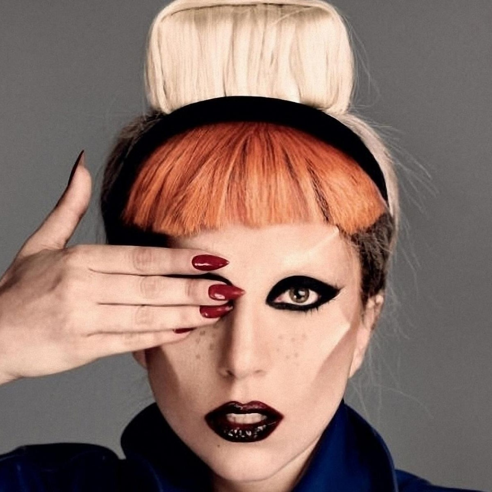

29,629,781 Monthly Listeners

Lady Gaga
About Artist
Grammy and Golden Globe winner and Academy Award-nominated Lady Gaga is a one-of-a kind artist and performer. She has amassed an outstanding 30 million global album sales and 150 million single sales, making her one of the best-selling musicians of all time. Gaga is also one of the biggest living forces in social media with over 60 million likes on Facebook, over 71 million followers on Twitter and over 25 million followers on Instagram. Her fifth studio album “Joanne” was released in October 2016 and debuted at #1 on the Billboard Top 200, marking her 4th consecutive #1 album - the first female to do so in the 2010s.
Gaga headlined the 2017 Pepsi Zero Sugar Super Bowl LI Half Time show. Her 13-minute solo performance amassed 117.5 million viewers.
She most recently released her documentary “Lady Gaga: Five Foot Two” via Netflix in late September, directed by Chris Moukarbel. Gaga will star alongside Bradley Cooper in the remake of the classic film, “A Star is Born,” set for release October 5, 2018.
In 2012, Lady Gaga launched Born This Way Foundation, a non-profit organization dedicated to empowering youth, embracing differences and inspiring kindness and bravery. She is also an outspoken activist, philanthropist and supporter of many important issues including LGBT rights, HIV/AIDS awareness, mental health advocacy and body image issues.